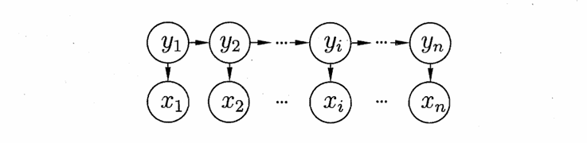
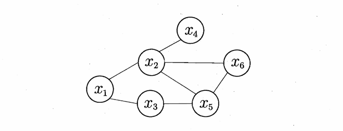
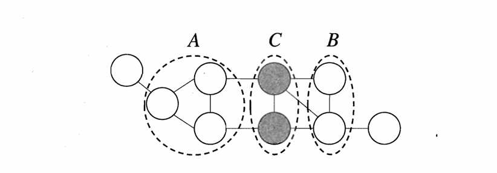
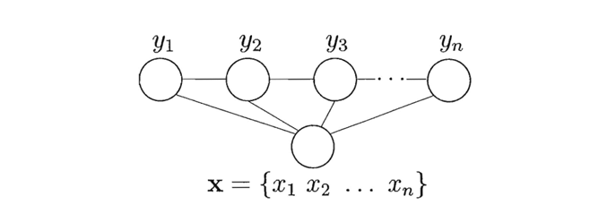
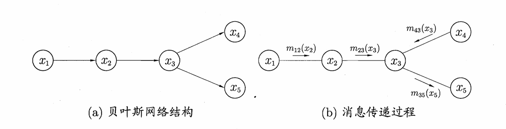

Chapter14 概率图模型
隐马尔可夫模型
概率图模型：
概率图模型是用图来表达变量关系的概率模型。分为
- 有向图模型（贝叶斯网）
- 无向图模型（马尔可夫网）
隐马尔可夫模型（Hidden Markov Model, HMM）：
隐马尔可夫模型是一种有向图模型。有两种变量：
- 状态变量 ${y_1,y_2,\dots,y_n}$
- 观测变量 ${x_1,x_2,\dots,x_n}$
二者的依赖关系如下图所示：

可以看出，在任意时刻，观测变量的取值仅依赖于状态变量，系统下一时刻的状态仅由当前状态决定，形成马尔可夫链，有联合概率分布：
$$P(x_1,y_1,\dots,x_n,y_n)=P(y_1)P(x_1|y_1)\prod\limits_{i=2}^n P(y_i|y_{i-1})P(x_i|y_i)$$
记 $y_i\in\mathcal{Y}$ 有 $N$ 种可能的取值，$x_i\in\mathcal{X}$ 有 $M$ 种可能的取值，欲确定一个隐马尔可夫模型还需要三组参数：
- 状态转移概率：$\mathbf{A}=[a_{ij}]{N\times N}$，$a=s_j|y_t=s_i),\quad1\leqslant i,j\leqslant N$}=P(y_{t+1
- 输出观测概率：$\mathbf{B}=[b_{ij}]{N\times M}$，$b=P(x_t=o_j|y_t=s_i),\quad1\leqslant i\leqslant N,1\leqslant j\leqslant M$
- 初始状态概率：$\boldsymbol{\pi}=(\pi_1,\dots,\pi_N)$，$\pi_i=P(y_1=s_i),\quad1\leqslant i\leqslant N$
这三组参数确定了一个隐马尔可夫模型 $\lambda=[\mathbf{A}, \mathbf{B}, \boldsymbol{\pi}]$，人们通常关注以下三个问题：
- 给定模型 $\lambda=[\mathbf{A}, \mathbf{B}, \boldsymbol{\pi}]$，如何有效计算其产生观测序列 $\mathbf{x}={x_1,\dots,x_n}$ 的概率？（评估模型与观测序列之间的匹配程度）
- 给定模型 $\lambda=[\mathbf{A}, \mathbf{B}, \boldsymbol{\pi}]$ 和观测序列 $\mathbf{x}={x_1,\dots,x_n}$，如何求解与观测序列最匹配的状态序列 $\mathbf{y}={y_1,\dots,y_n}$？（根据观测序列推断出隐藏的模型状态）
- 给定观测序列 $\mathbf{x}={x_1,\dots,x_n}$，如何调整模型参数 $\lambda=[\mathbf{A}, \mathbf{B}, \boldsymbol{\pi}]$，使得该序列出现的概率最大？（训练模型使其能更好地描述观测数据）
马尔可夫随机场
马尔可夫随机场（Markov Random Field, MRF）是一种无向图模型。

如果一组节点两两都有边连接，则这个节点子集称为一个团；如果一个团不能再通过添加节点而扩大，或者说不能被其他团包含，则称为极大团。每个节点都至少出现在一个极大团中。
联合概率分布：
对于节点图中的 $n$ 个变量 $\mathbf{x}={x_1,\dots,x_n}$，设所有极大团构成的集合为 $\mathcal{C}^$，极大团 $Q\in\mathcal{C}^$ 对应的变量集合为 $\mathbf{x}_Q$，则有联合概率分布：
$$P(\mathbf{x})=\frac{1}{Z^}\prod_{Q\in\mathcal{C}^}\psi_Q(\mathbf{x}_Q)$$
其中，$\psi_Q$ 为 $Q$ 对应的势函数，用于对变量关系进行建模；$Z^$ 为规范化因子*，确保 $P(\mathbf{x})$ 是被正确定义的概率。
条件独立性：
如下图所示，若从节点集 $A$ 到节点集 $B$ 必须经过节点集 $C$，则 $C$ 是 $A$ 和 $B$ 的分离集。

若给定两个变量子集的分离集，则这两个变量子集条件独立，这称为全局马尔可夫性。如上例，记作 $\mathbf{x}_A \perp \mathbf{x}_B \mid \mathbf{x}_C$。
由全局马尔可夫性可以推出：
- 局部马尔可夫性：若给定某变量 $v$ 的全部相邻变量 $n(v)$，则该变量条件独立于其他变量 $V\setminus(n(v)\cup{v})$：$\mathbf{x}v\perp\mathbf{x}$} \mid \mathbf{x}_{n(v)
- 成对马尔可夫性：两个非相邻变量 $u$ 和 $v$ 在给定所有其他变量 $V\setminus{u,v}$ 的条件下独立：$\mathbf{x}u\perp\mathbf{x}_v \mid \mathbf{x}$
条件随机场
条件随机场（Conditional Random Field, CRF）是一种无向图模型。
生成式模型对联合分布进行建模，隐马尔可夫模型和马尔可夫随机场都是生成式模型；判别式模型对条件分布进行建模，条件随机场是判别式模型。
令观测序列 $\mathbf{x}={x_1,\dots,x_n}$，对应标记序列 $\mathbf{y}={y_1,\dots,y_n}$，则条件随机场的目标是构建条件概率模型 $P(\mathbf{y}|\mathbf{x})$。

Warning
略
学习与推断
若图模型对应的变量集 $\mathbf{x}={x_1,\dots,x_N}$ 能分成互不相交的 $\mathbf{x}_E$ 和 $\mathbf{x}_F$，则推断问题的目标就是计算边际概率 $P(\mathbf{x}_E)$：
$$P(\mathbf{x}E)=\sum\limits_F)$$}_F}P(\mathbf{x}_E,\mathbf{x
后面的联合概率可以根据概率图模型得到，推断问题的关键就在于如何高效计算上式。
变量消去

以左图为例。
若目标是计算边际概率 $P(x_5)$，则
$$\begin{align} P(x_5) & =\sum\limits_{x_4}\sum\limits_{x_3}\sum\limits_{x_2}\sum\limits_{x_1} P(x_1,x_2,x_3,x_4,x_5) \ & =\sum\limits_{x_4}\sum\limits_{x_3}\sum\limits_{x_2}\sum\limits_{x_1}P(x_1)P(x_2|x_1)P(x_3|x_2)P(x_4|x_3)P(x_5|x_3) \end{align}$$
如果求和的顺序是 $x_1,x_2,x_4,x_3$，则上式变为
$$\begin{align} P(x_5) & =\sum\limits_{x_3}P(x_5|x_3)\sum\limits_{x_4}P(x_4|x_3)\sum\limits_{x_2}P(x_3|x_2)\sum\limits_{x_1}P(x_1)P(x_2|x_1) \end{align}$$
Warning
狗屎
信念传播
Warning
传你妈